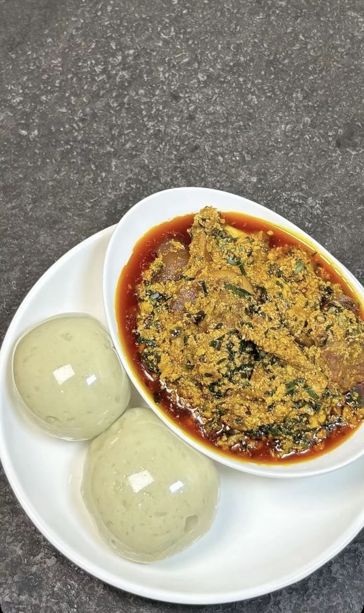

Eba and Egusi Soup is a popular Nigerian meal made with smooth eba served alongside rich egusi soup. It is prepared with ground melon seeds, vegetables, spices and assorted protein.
The meal is delicious, filling and suitable for customers who enjoy traditional Nigerian food.
| Specification | Details |
|---|---|
| Food Name | Eba and Egusi Soup |
| Category | Nigerian Food |
| Main Ingredients | Garri, egusi, vegetables, meat and spices |
| Serving Size | 1 plate |
| Price | N5,000 |